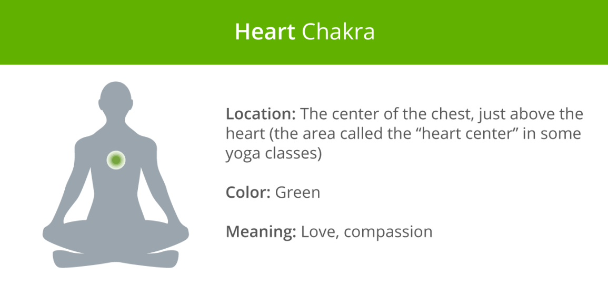
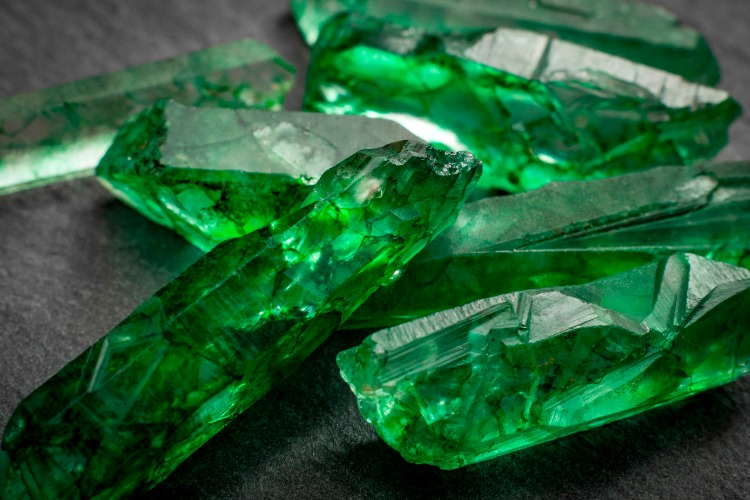
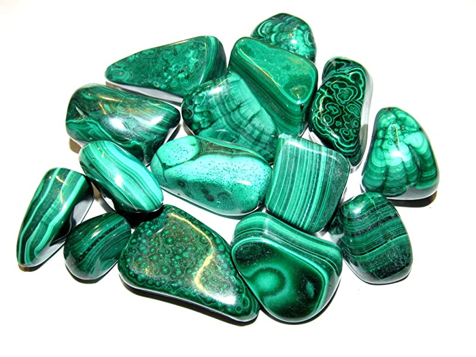
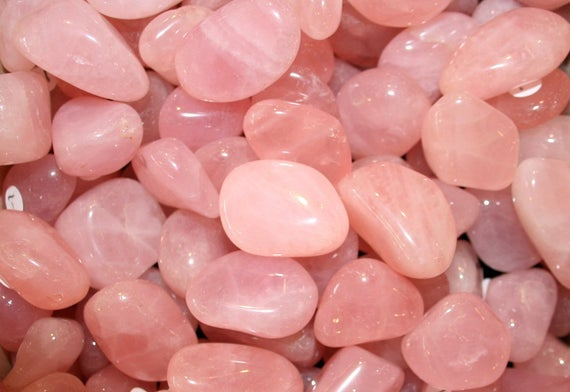

Heart Chakra

Image from https://www.healthline.com/health/fitness-exercise/7-chakras
The heart chakra, located in the middle of the chest (over the sternum), is associated with love, acceptance, compassion, and sincerity.
The main colour of the heart chakra is green, but a few pink crystals also match its energetic frequency:
1. Emerald

Image from https://www.equities.com/news/understanding-the-colombian-emerald-mining-sector
Assists in:
- Self-love
- Relationships
- Fertility
- Good luck
- Relieving stress and anxiety
- Wealth and prosperity
Dubbed the 'Stone of Successful Love', Emerald offers healing energy to the heart chakra, restoring balance between partners in a relationship.
It also calms emotions, healing the heart after an unsuccessful relationship.
2. Malachite

Image from https://www.amazon.com/Zentron-Crystal-Collection-Malachite-Authentic/dp/B06XCJ5GMW
Assists in:
- Empathy
- Unconditional Love
- Reducing electromagnetic pollution
- Psychic protection
- Aura cleansing
A mesmorising green stone of protection, Malachite absorbs negative energy from our aura, helping us develop a healthy relationship with ourselves and others.
It also possesses a pleasant, stabilising energy that makes us feel more relaxed and emotionally balanced.
3. Rose Quartz

Image from https://www.etsy.com/sg-en/listing/209545596/rose-quartz-crystal-rose-quartz-stone
Assists in:
- Self-love
- Forgiveness
- Compassion
- Relationships
- Stress and anxiety
- Clearing energetic blocks
- Good fortune
A powerful pink crystal of unconditional love, Rose Quartz stimulates the loving energy of our heart throughout our entire aura.
It also assists in regeneration, and can be used for both physical and spiritual healing through its nourishing, gentle, soothing, and calming vibration.
[Information adapted from https://7chakrastore.com/blogs/news/chakra-stones]